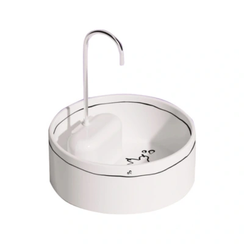

Bebedouro Fonte de Porcelana Cansei de Ser Gato

- Preço
- R$ 296,99
- Indicação
- Gatos
- Filtragem
- Filtro de carvão ativado que mantém a água livre de impurezas, mau gosto e odores
- Segurança
- Baixa tensão e sistema eletrônico que evita a queima da bomba caso seja obstruída ou fique sem água
- Material e Higiene
- Porcelana de fácil limpeza com torneira em inox antioxidante
- Apresentação
- Disponível em embalagem com 1 unidade